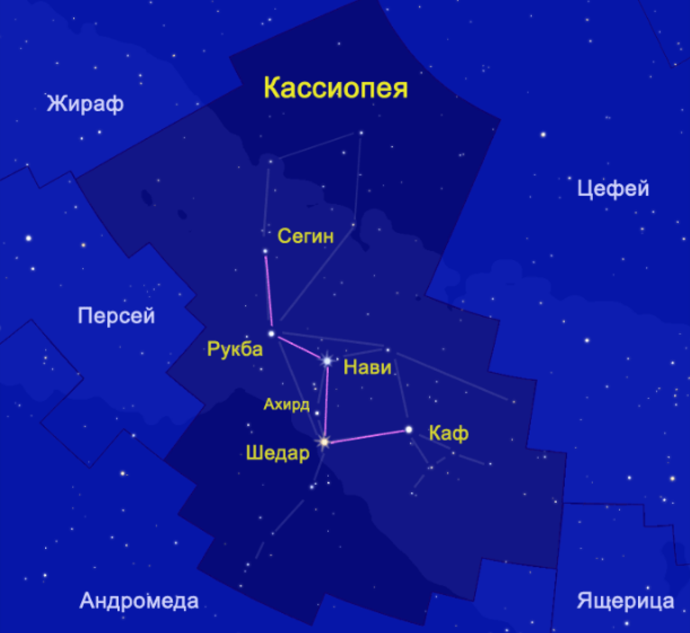
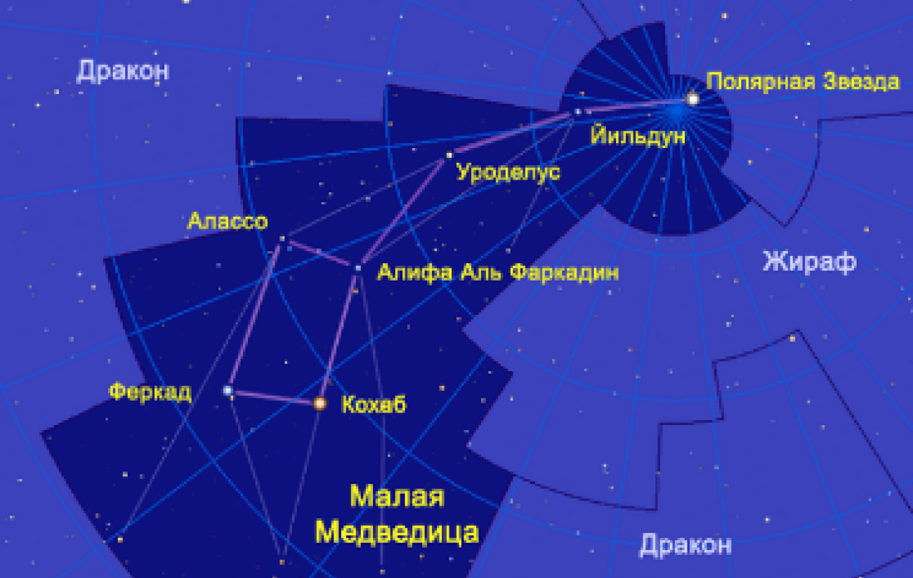
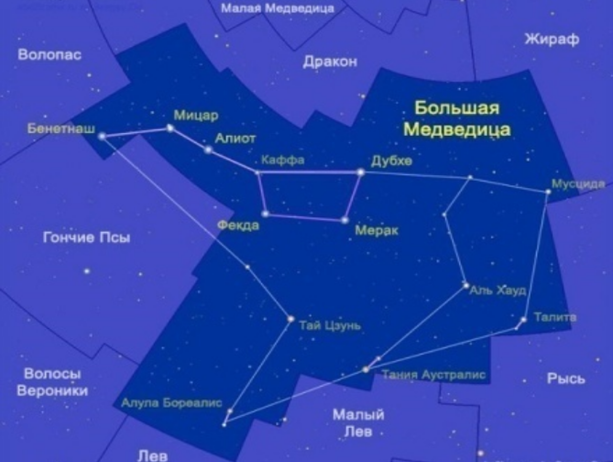
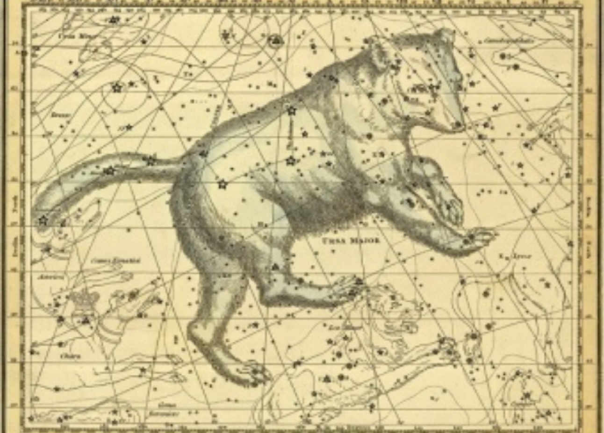
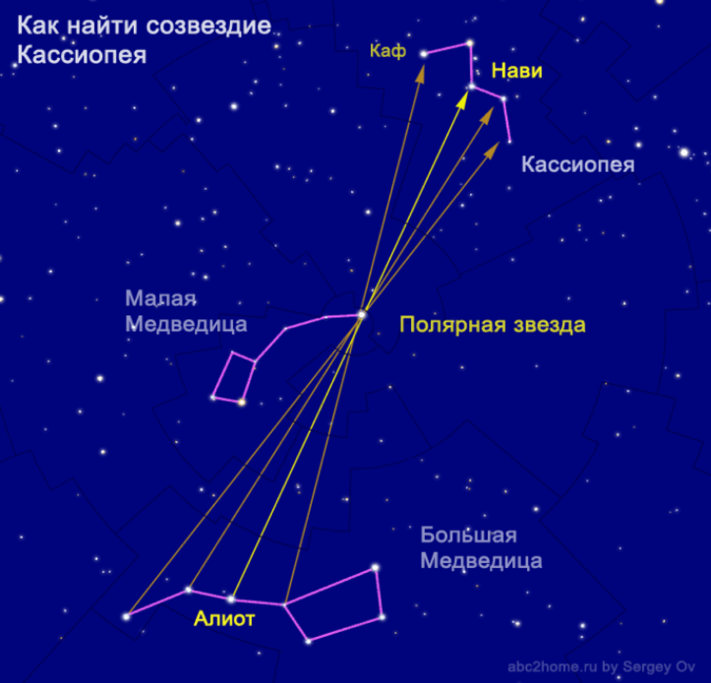

ПРАКТИЧЕСКОЕ ЗАНЯТИЕ №1 «НАХОЖДЕНИЕ ЗВЕЗД И ПЛАНЕТ ПО АСТРОНОМИЧЕСКОМУ КАЛЕНДАРЮ И ПОДВИЖНОЙ КАРТЕ ЗВЕЗДНОГО НЕБА
Астрономический календарь — это ежегодно или ежемесячно издаваемый справочник, содержащий эфемериды и обзоры ожидаемых астрономических событий. Эфемеридами называют таблицы с указанием координат и условий видимости Солнца, Луны, планет и других космических объектов. В календаре используются астрономические явления: смена дня и ночи, изменение лунных фаз и смена времён года. На их основе установлены единицы измерения больших промежутков времени: средние солнечные сутки (24 ч), синодический месяц (29 сут 12 ч 44 мин 3 сек среднего солнечного времени) и тропический год (365 сут 5 ч 48 мин 46 сек среднего солнечного времени). Невозможно подобрать такое целое число тропических лет, в которых содержалось бы целое число синодических месяцев и целое число средних солнечных суток; все эти три величины несоизмеримы. Именно этим объясняются сложность построения календарей, появление на протяжении нескольких тысячелетий многочисленных календарных систем, стремящихся преодолеть эти сложности.
Содержание практич.работы:
1. Тема: ПРАКТИЧЕСКОЕ ЗАНЯТИЕ №1 «Нахождение звезд и планет по астрономическому календарю и подвижной карте звездного неба» (стр.65)
2. Цель работы.
3. Часть 1.
4. Часть 2: п.2,3,4,5,6.
5. Часть 4: п.1, 2, 3
Краткие теоретические сведения
Созвездие Кассиопея
В созвездии Кассиопеи целых пять навигационных звезд: четыре звезды ярче третьей звездной величины - это Нави (γ Cas; переменная от 1,6m до 3m, сейчас 2,15m), Шедар (α Cas; 2,24m), Каф (β Cas; 2,27), Рукба (δ Cas; 2,68) и одна звезда с блеском 3,37m - Сегин (ε Cas: имеется "тезка" - гамма Волопаса, γ Boo).

Созвездие Малой Медведицы
Четыре из них имеют свои имена, остальные названы буквами греческого алфавита:
- Альфа. Первая в созвездии, так же именуемая Полярная. Самая яркая на ночном небе.
- Бета. Другое имя – Кохаб. Вторая по уровню яркости в скоплении звезд. Она имеет спутник и является оранжевым гигантом.
- Гамма – это Феркад. Бета и гамма созвездия в переводе с арабского значат «два теленка».
- Дельта, Эпсилон, Зита и Ита не имеют специальных названий. Все они отдалены от Земли на более чем 400 световых лет.

Почему созвездия назвали медведицами?
Внешний вид созвездий даже отдаленно не напоминает ни бурого, ни белого зверя. Тогда почему же их не назвали «ковшами»? Считается, что название пошло от греков, которые знали о близком расположении к Северному полюсу.
Карта была большой роскошью, поэтому ориентировались по небу. Их предположение даже в 545 году до нашей эры оказалось правдивым.
Кто является главным обитателем Северного полюса? Конечно, медведь. Отсюда и пошло название двух созвездий, расположенных неподалеку от самой северной точки планеты.
Созвездие Большой медведицы
Отвечая на вопрос, сколько звезд в Большой Медведице, указывают 7 наиболее заметных точек. Эта семерка образует тот самый «ковш», хорошо заметный на ночном небе.

1. Дубхе («медведь») – альфа созвездия, вторая по интенсивности свечения. Одна из двух указателей на Северный полюс. Красный гигант, отстоящий от Земли на 125 световых лет.
2. Мерак (переводится как «поясница») – бета-звезда, второй указатель на Северный полюс. Объект дистанцирован от Земли примерно на 80 световых лет, по величине чуть крупнее Солнца, испускает мощный поток инфракрасного излучения.
3. Фекда («бедро») – гамма, звезда-карлик, находящаяся на расстоянии чуть меньше 85 световых лет от нашей планеты.
4. Мегрец (с арабского «основание») – дельта, голубой карлик, отстоящий более чем на 80 световых лет от Земли. Объект так назвали, потому что он является основанием длинного хвоста «небесного зверя».
5. Алиот («хвост») – эпсилон, самая яркая точка созвездия, находится на 31 месте по светимости видимых на небосводе объектов (звездная величина 1,8). Белая звезда,
светимость в 108 раз выше, чем у Солнца. Один из 57 используемых в навигации небесных объектов.
6. Мицар (с арабского «пояс») – дзета-звезда, четвертая по яркости в «ковше». Звезда двойная, имеется менее яркий спутник – Алькор.
7. Алькаид («лидер») или Бенетнаш («плачущая») – эта-звезда, третья по светимости, конец «медвежьего хвоста». Голубой карлик, дистанция – 100 световых лет от нашей планеты.
Общее количество объектов в созвездии – около 125.
Из них следует отметить три расположенные на одной линии пары звезд, находящиеся на короткой дистанции друг от друга:
- АлулаБореалис (ню созвездия) и АлулаАустралис (кси);
- ТанияБореалис (лямбда) и ТанияАустралис (мю);
- ТалитаБореалис (йота) и ТалитаАустралис (каппа).
Эти три пары еще называют тремя прыжками газели, на нижеприведенной карте они находятся в нижней части звездного скопления.

На рисунке показано расположение главной семерки звезд и объектов групп Талита, Тания и Алула.
Легенда о Большой Медведице
Существует древнегреческий миф, по которому можно понять, почему созвездие Большой Медведицы так называется.
Каллисто, наследница царя Ликаона, была одной из самых красивых нимф, служивших Артемиде. На красавицу обратил взор Зевс. Он принял облик Артемиды и соблазнил девушку. Богиня разозлилась, заметив в купальне, что ее любимая нимфа беременна, прогнала ее. Несчастная Каллисто отправилась в горы, где родила сына Аркаса.
Но злоключения нимфы на этом не прекратились. Гера, супруга бога-соблазнителя, узнала об Аркасе – внебрачном сыне Зевса, в отместку превратила соперницу в медведицу. Став взрослым, Аркас занялся охотой. Однажды в горах он столкнулся с медведицей, но даже подумать не мог, что перед ним родная мать. Юноша хотел пустить в зверя стрелу, но его остановил Зевс. Главный бог не допустил, чтобы сын совершил страшный поступок, но не смог разорвать данное Герой проклятье. Пожалев несчастную Каллисто, Зевс превратил ее и сына в звезды и отправил их на небо. Так на небосводе появилась Большая Медведица, а рядом сын – Малая медведица.
Взаимная ориентация созвездий Кассиопея, Большой и Малой Медведицы:

^ Наверх